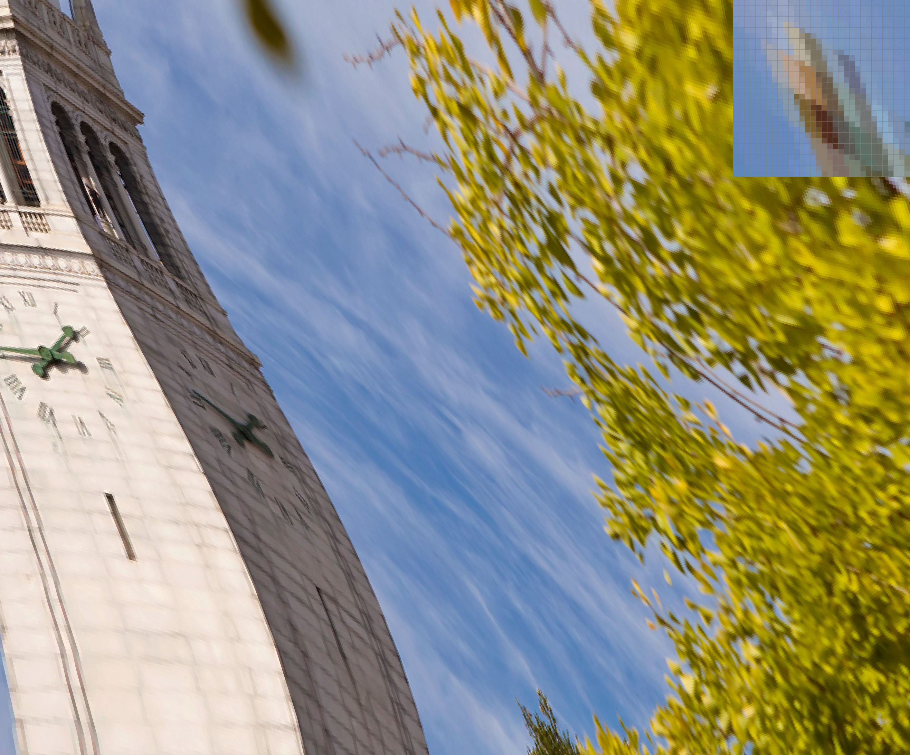
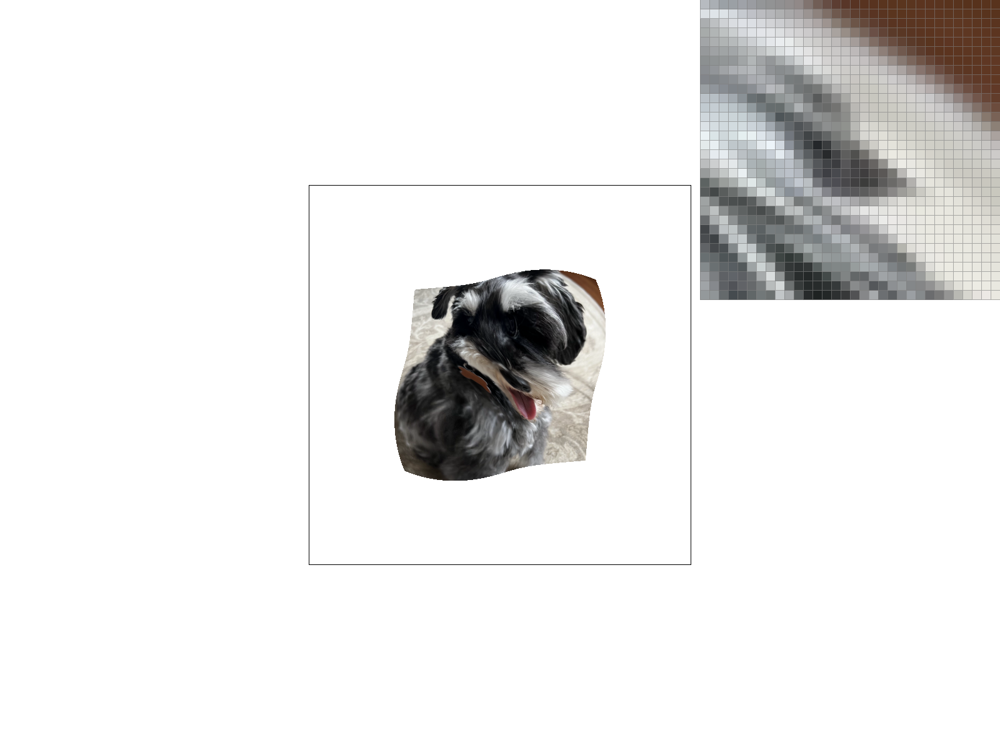

CS184/284A Fall 2026 Homework 1 Write-Up
Names: Marie-Anne Xu, Nicolas Rakela
Link to webpage: https://cal-cs184-student.github.io/hw1-serial-lion-link-writeup/
Link to GitHub repository: https://github.com/cal-cs184-student/hw1-serial-lion-link
Overview
For this assignment, we implemented a basic rasterization pipeline that can turn SVG images into pixels. We implemented a triangle rasterizer, supersampling to prevent aliasing, transforms, barycentric interpolation, texture sampling, and mipmapping. What we learned and found interesting about this assignment: - The edge function does more than just check if a point is inside a triangle. It gives a side, barycentric weights, and it can also be implemented cheaply in GPUs given that L(x, y) and L(x+1, y) are differ only by an addition. - Antialiasing and mipmapping are basically the same thing, but just in opposite directions. This is expected since both fix undersampling, but implementing them in together in one assignemnt really highlights their similarities and differences. - There are many differnt coordinates and almost every bug comes from a coordinate frame confusion. - Floating point math is very annoying. We had several white dots in many images and it took us a long time to figure out that it was exclusively because of floating point arithmetic differences when evaluating vertices in different orders.Task 1: Drawing Single-Color Triangles

Task 2: Antialiasing by Supersampling
To supersample, we take the same idea of checking each pixel within the triangle, but for each pixel, we take a uniform spread of samples. Our modifications impacted the rasterization pipeline for both the image and the square boundary; we had to make sure the scale the square boundary accordingly by modifying the rasterize_point and fill_pixel functions. The resolve_to_framebuffer function was also updated to downsample the supersampled buffer by updating each pixel to be the average of its samples. Supersampling reduces aliasing and improves image quality (i.e. removing jaggies). By taking more samples, we antialias triangles because we capture more points than just the center of the pixel, which gives us more information to make a more accurate picture.

|

|

Task 3: Transforms

Task 4: Barycentric coordinates
Barycentric coordinates describe the location of a point in a triangle in relation to the three vertices. The three weights (alpha/beta/gamma) in the barycentric coordinates tell us how far from each corresponding vertex that point is. For example, in the below triangle, the vertices are red, green, and blue. Each point inside the triangle is a weighted combination of the vertices, which translates to the combination of the three colors.

|

|
Task 5: "Pixel sampling" for texture mapping
Pixel sampling is the step that chooses the color that a screen sample should take from the texture image. The process looks very similar to triangle rasterization, but insted of trying to find the color of the pixel, we are trying to find the color of the texture at that pixel. When sampling a texture, each triangle vertex carries a (u,v) texture coordinate, so we interpolate those barycentrically and then scale by the texture's width to get a texel coordinate. Once we have a texel coordinate, there are two ways that we implemented to determine the final texel. First, we implemented nearest neighbor sampling, which finds the closest texel in the texture to the sample. Second, we implemented bilinear sampling, which finds the four closest texels to the sample and interpolates them .
- Nearest, 1 sample per pixel: The pixel inspector shows discrete blocks of color with hard boundaries, and a clear diagonal staircase pattern. Texture blocks make this look very ugly.
- Nearest, 16 samples per pixel: Barely different from nearest, 1 sample per pixel. The pixel inspector shows discrete blocks of color with less hard boundaries, and the same diagonal staircase pattern. Texture blocks are still very distinguishable.
- Bilinear, 1 sample per pixel: Essentially identical to bilinear, 1 sample per pixel. The gradient looks slightly smoother, but likely the 16 samples land on the same (u,v).
Task 6: "Level Sampling" with mipmaps for texture mapping
Level sampling is the step that allows us to choose which level of mip map we will be sampling from. The process is similar to pixel sampling, but instead of choosing how to read within a level, we choose which levl to read from. The problem it solves is that when a texture surface has a high gradient, one pixel covers many texels. A mip map precomputes an average of several texels, so that the gradient looks smoother. We implement this the following way: we pick a level based on the barycentric UV on the current sample in `rasterize_texture_triangle` and t compute the difference with one pixel down and one to the right. This difference then gets scaled by the level 0 texture dimensions to convert to texel space. L_ZERO skips this and reads level 0, L_NEAREST rounds this value to the nearest level, and L_LINEAR blends the two bracketing levels by the fractional part.Putting all of the different sampling methods together, we conclude that by far the most costly method is super sampling. Computationally it is N times more expensive, and it costs an N times larger sample buffer. Bilinear pixel sampling costs 4 texel fetches instead of 1 and no extra memory. Mipmapping costs a log per sample plus a fixed 33% of the texture, and can run fast like L_ZERO since small levels fit in cache. They also fix different things and don't substitute for each other. Supersampling handles jagged silhouettes but not texture aliasing (our Part 5 images show nearest at 16 samples/pixel looking nearly identical to nearest at 1), bilinear pixel sampling handles texture magnification blockiness, and mipmapping handles minification shimmer.
|
|
|
|
|
 |